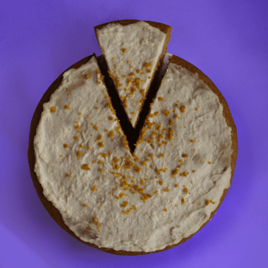
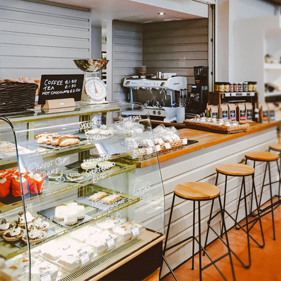
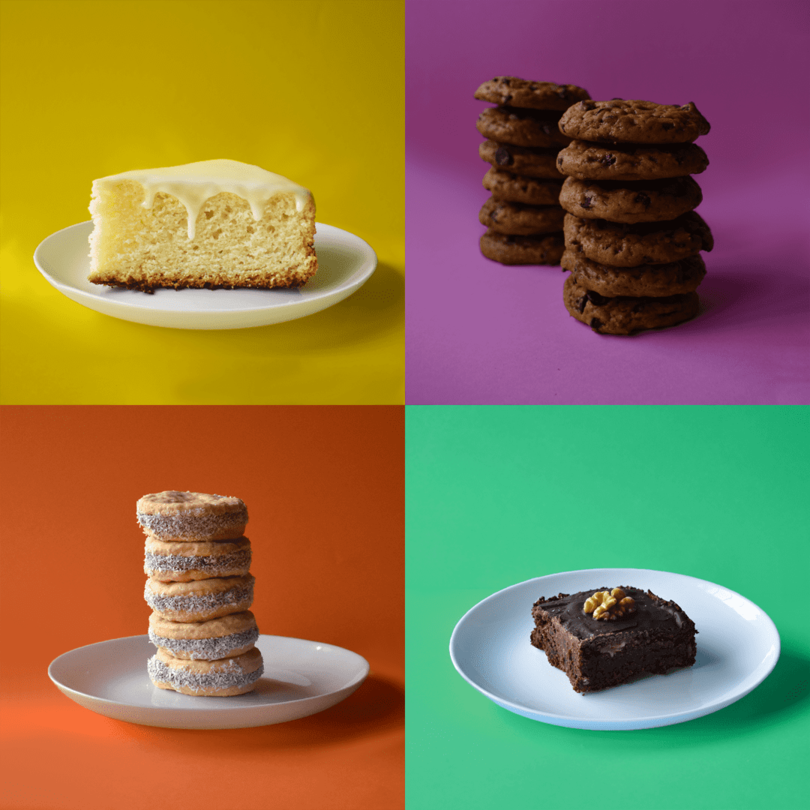

Piel de Frutilla
100% a base de plantas
¿QUIÉNES SOMOS?
Piel de Frutilla es una pastelería 100% a base de plantas, artesanal y moderna. Debido a que buscamos generar cambios en la manera en la que nos alimentamos, no utilizamos conservantes ni aditivos y todos nuestros productos son frescos, integrales, nutritivos, de origen vegetal y, por lo tanto, apto para veganos. Además utilizamos packaging ecológico, compostable y biodegradable, logrando alcanzar una huella de carbono neutral.
SORTEO MENSUAL
¡No te pierdas la oportunidad de participar en nuestros sorteos mensuales! Ganá productos de la pastelería, tarjetas de compra o cupones de descuento para que no dejes de darte el gusto de disfrutar de algo dulce. Este mes de junio el premio es una rica Carrot Cake. ¡Participá llenando el formulario de inscripción o acercate al local y dejanos tus datos!
INSCRIBIRSEINAUGURAMOS LOCAL
Nos complace anunciar que, después de una larga espera, a comienzos del mes de mayo finalmente hemos inaugurado nuestro muy esperado primer local ubicado en la hermosa ciudad de La Plata, en calle 46 número 573. Abrimos de lunes a viernes de 9hs a 20hs y los sábados de 10hs a 19hs. No dudes en visitarnos. ¡Te esperamos!
VER UBICACIÓNNUESTRA CARTA
Contamos con una carta repleta de productos a base de plantas que vas a amar: tortas, budines, brownies, blondies, cookies y alfajores. Ofrecemos una gran variedad de sabores para que puedas disfrutar de algo dulce sin importar tus preferencias! Sumergite en nuestro mundo, donde la magia de lo vegano se combina con el placer de disfrutar de algo delicioso.
VER CARTA